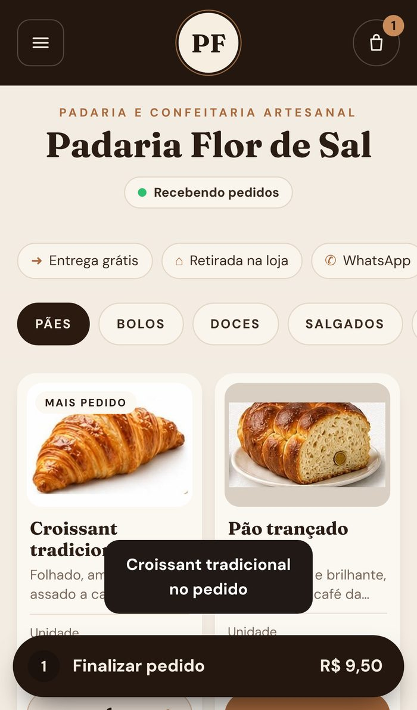
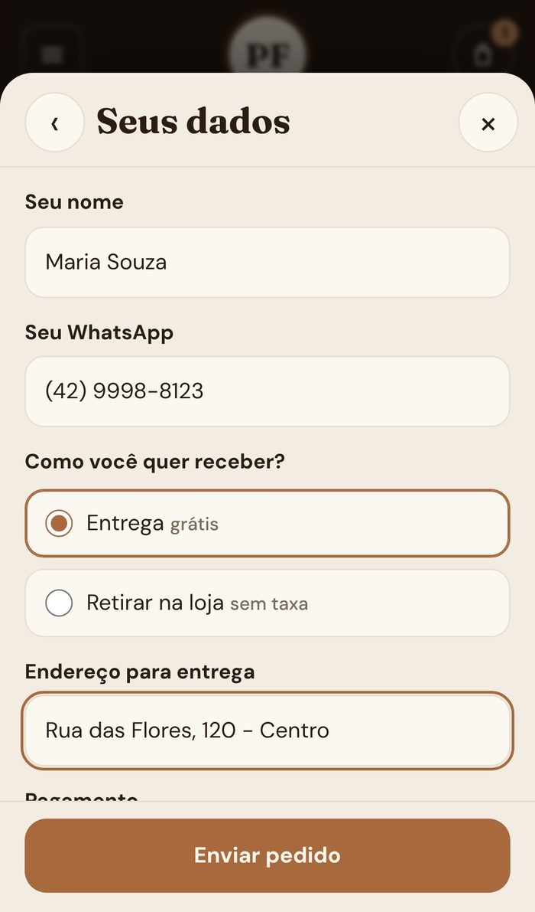
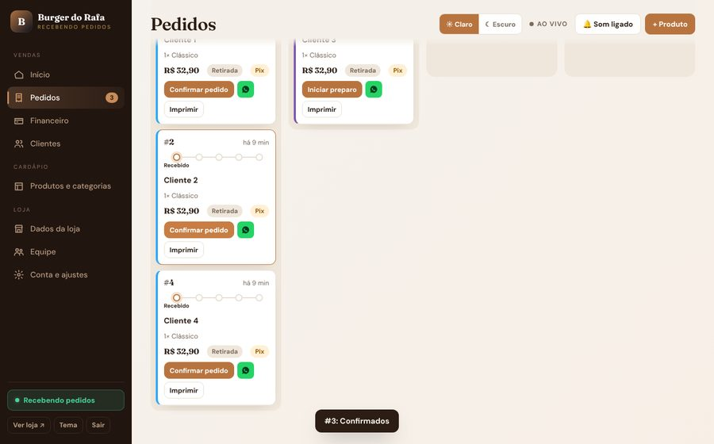
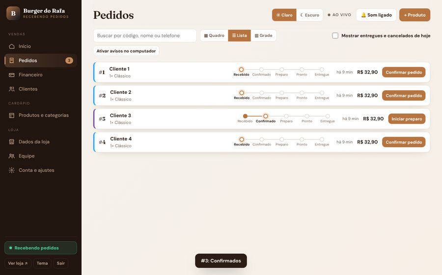
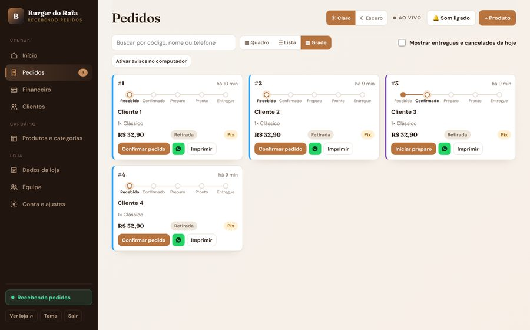

Como vender e entregar a Plataforma Bistrô Connect e os sites de marca, do primeiro contato ao pós-venda, com mensagens prontas e listas para marcar.
bistroconnect.com.brEdição de outubro de 2026
≡
Sumário
Leia a Parte 1 e a Parte 2 na primeira vez. Depois use o manual como consulta: cada capítulo termina com uma lista para marcar.
01O que você vende
02Qual produto oferecer
03O que precisa estar pronto
04Da conversa ao “sim”
05Entrega da plataforma: visão geral
06Entrega da plataforma: passo a passo
07O dia a dia da loja
08Pós-venda: dia 1, 7 e 30
09Site de marca: proposta e escopo
10Site de marca: entrega passo a passo
11Site completo com banco próprio
12Aceite e termo de entrega
13Cobrança e contratos
14Suporte: problemas e soluções
15Segurança e LGPD
A–EAnexos: mensagens, listas e modelos
i
Como este manual está organizado
Parte 1 explica o que existe. Parte 2 é a venda e a entrega da plataforma (o produto principal). Parte 3 é a venda e a entrega de sites. Parte 4 cobre cobrança, suporte e segurança. Os anexos têm tudo para copiar e imprimir.
Parte 1
Visão geral
O que você vende, para quem e o que precisa estar pronto antes da primeira conversa.
01O que você vende
02Qual produto oferecer
03O que precisa estar pronto
01
O que você vende
Três formatos, uma mesma ideia: o dono vende direto pelo WhatsApp, sem pagar comissão sobre cada pedido.
Produto principal
Plataforma
A loja do cliente fica pronta em /l/nome-da-loja: cardápio com fotos, pedido, cartão do pedido em imagem, rastreio e painel com equipe.
Para marcas
Site de marca + plataforma
Site institucional no domínio do cliente (história, fotos, contato) com botão “Pedir agora” que leva à loja na plataforma.
Sob medida
Site completo independente
Site e painel próprios, com banco de dados exclusivo do cliente. Modelo dos sites Âmbar, Bruto Burger e Padaria & Café.
Comparativo rápido
Plataforma
Site de marca + plataforma
Site completo independente
Para quem
Quem quer vender logo, com cardápio e pedidos
Quem quer marca forte e domínio próprio
Quem exige controle total ou dados separados
Tempo de entrega
1 a 2 horas
3 a 7 dias úteis
5 a 10 dias úteis
Domínio
bistroconnect.com.br/l/…
Do cliente (ex.: padariaflor.com.br)
Do cliente
Banco de dados
Compartilhado, cada loja isolada por regras de acesso
O mesmo da plataforma
Projeto próprio no Supabase
Novidades do produto
Chegam sozinhas
Chegam sozinhas na loja
Precisam ser aplicadas uma a uma
Custo fixo para você
Quase zero por loja
Domínio do cliente
Domínio e banco por cliente
Cobrança
Mensalidade pela faixa de vendas
Implantação + mensalidade da plataforma
Implantação + manutenção mensal
✓
Regra de ouro
Venda a plataforma primeiro. O site de marca entra como complemento, para quem já está vendendo e quer fortalecer a marca. O site independente é exceção: dá mais trabalho e mais custo, então precifique à parte.
02
Qual produto oferecer
Duas ou três perguntas na primeira conversa já mostram o caminho certo.
O caminho de decisão
?O cliente já vende no WhatsApp ou no Instagram?Sim: ele precisa de organização, não de site.
→Quer começar logo, sem investir muito?Plataforma.
→Quer marca, história e domínio próprio?Site de marca + plataforma.
→Exige dados separados ou recursos próprios?Site completo independente.
Sinais que aparecem na conversa
O cliente diz…
Ofereça
Por quê
“Perco pedido no meio das mensagens do WhatsApp”
Plataforma
O pedido chega organizado, com cartão em imagem e status.
“Pago muito para o iFood / app de entrega”
Plataforma
Sem comissão por pedido. A mensalidade só cresce com as vendas.
“Quero um site bonito com a minha cara”
Site de marca + plataforma
Marca no domínio dele, venda dentro da plataforma.
“Tenho várias unidades” ou “quero tudo isolado”
Site completo independente
Banco próprio, sem compartilhar nada com outras lojas.
“Só quero ver como funciona”
Demonstração
Mostre uma loja de exemplo no celular, em 10 minutos.
!
O que não prometer
Não prometa pedido automático para o WhatsApp da loja sem o cliente tocar em nada: o WhatsApp não permite isso fora da API oficial (paga). Hoje o cliente final toca em Enviar no WhatsApp e escolhe o contato da loja; o cartão do pedido vai como imagem.
03
O que precisa estar pronto
Antes de vender, confira o seu lado. Isso evita travar a entrega no meio.
Contas
Acessos que você usa
Hostinger (hPanel) com acesso ao Gerenciador de Arquivos
Supabase: projeto da plataforma e, se vender site independente, uma conta com limite para novos projetos
GitHub, o cofre do código (repositório Command-AI)
Celular com aplicativo autenticador (Google Authenticator)
Gerenciador de senhas para guardar tudo
Material
O que mostrar ao cliente
Link de uma loja de demonstração pronta, aberta no celular
Painel de demonstração (botão “Ver demonstração” em /painel/)
Fotos de exemplo da plataforma e do site Âmbar, Bruto e Padaria
Termos de uso e Política de privacidade publicados
Dados da empresa preenchidos em assets/config.js
Dados da empresa nos Termos e na Privacidade
Estes campos ficam no arquivo assets/config.js, dentro de empresa. Enquanto estiverem vazios, os documentos mostram o texto “a preencher”. Preencha antes da primeira venda.
Razão social
CNPJ
E-mail de suporte e privacidade
Cidade e estado (foro)
i
Modo convite
Por enquanto a plataforma funciona em modo convite: você escolhe quem entra e entrega o link de cadastro pessoalmente. Não divulgue o cadastro aberto nem a palavra “grátis” em anúncios. A mensalidade do plano inicial é zero, mas isso é uma condição que você oferece, não uma promessa pública.
Parte 2
Plataforma
Do primeiro contato à loja no ar: como vender, entregar, treinar o cliente e acompanhar depois.
04Da conversa ao “sim”
05Entrega: visão geral
06Entrega: passo a passo
07O dia a dia da loja
08Pós-venda
04
Da conversa ao “sim”
A venda da plataforma é curta: uma conversa, uma demonstração de dez minutos e uma proposta de uma tela.
1Abordagemmensagem curta no Instagram ou WhatsApp
2Demonstração10 minutos, loja de exemplo no celular
3Propostao que está incluso e quanto custa
4Fechamentocadastro ao vivo e combinado de data
Roteiro da demonstração (10 minutos)
Comece pelo cliente final
Abra a loja de exemplo no celular. Mostre o cardápio com fotos, escolha um prato com opcionais e vá até o final do pedido.
Onde Mostre a vitrine, a sacola, os dados do pedido e a tela “Pedido recebido”.
Mostre o cartão do pedido
Na tela “Pedido recebido” o cliente vê o cartão com os itens e toca em Enviar no WhatsApp. Pause aqui: é o diferencial. A loja recebe uma imagem organizada, não um texto solto.
Passe para o painel da loja
No painel de demonstração, mostre o pedido chegando, o quadro de etapas e o botão que muda o status. O cliente final acompanha tudo pelo link de rastreio.
Fale do custo sem rodeio
Sem comissão por pedido. A mensalidade depende de quanto a loja vende no mês, e o plano inicial não tem mensalidade.
Feche com o próximo passo
“Posso criar a sua agora, com você aqui? Leva uns quinze minutos.”
04
Objeções e respostas
As seis dúvidas mais comuns e a resposta curta que funciona.
O cliente diz
Responda
“Já uso iFood / Anota Aí / outro app”
“Continue usando. Aqui o cliente pede direto de você, sem comissão. É a venda que o app não cobra.”
“Não tenho tempo de montar cardápio”
“Montamos juntos. Mande o cardápio e as fotos que eu deixo pronto, e você só aprova.”
“E se não funcionar para mim?”
“Você começa sem mensalidade e sem contrato longo. Se não ajudar, pausa a loja e pronto.”
“Meu cliente não vai baixar app”
“Não precisa de app. Abre o link no celular, igual ao que você manda no WhatsApp hoje.”
“Preciso de um site também”
“Dá para ter. O site de marca fica no seu domínio e leva o cliente para pedir na plataforma.”
“É seguro? Meus dados ficam onde?”
“Login em duas etapas, cada loja só vê os próprios dados e o preço de cada pedido é conferido no servidor.”
Proposta em uma tela
Modelo de proposta (WhatsApp)Combinado, [Nome]. Resumo do que montamos para a [Loja]:
- Loja online com o seu cardápio, fotos e opcionais
- Pedido organizado, com cartão em imagem para o WhatsApp
- Painel para acompanhar e mudar o status
- Link de rastreio para o seu cliente
- Treinamento de 15 minutos
Mensalidade: começa em R$ 0 e só aumenta se a loja passar de R$ 3.000 em vendas no mês pela plataforma. Sem comissão por pedido.
Posso criar agora com você? Preciso do nome da loja, do WhatsApp, do cardápio e das fotos.
i
Quando o cliente some
Mande uma mensagem de acompanhamento em 24 horas (modelo no Anexo A) e outra em 3 dias. Depois disso, pare. Insistir demais queima a relação.
05
Entrega da plataforma: visão geral
A entrega é feita ao vivo, em videochamada, e leva de uma a duas horas. O cliente cria a própria conta: você nunca fica com a senha dele.
1Briefingcoletar dados e fotos
2Conta e lojao cliente cria ao vivo
3Dados e cardápiohorário, entrega, produtos
4Visuallogo, capa e páginas
5Testepedido real do começo ao fim
6Treino15 minutos
Cronograma sugerido
Dia 0
Briefing. Mande o formulário (Anexo D) e peça logo o cardápio com preços e as fotos dos pratos.
Dia 1
Montagem. Videochamada de uma a duas horas: o cliente cria a conta e a loja, você cadastra categorias e produtos.
Dia 1
Teste e treino. Pedido real pelo celular do cliente, treino de 15 minutos e entrega dos acessos.
Dia 2
Acompanhamento. Mensagem perguntando como foi o primeiro dia, e ajuste do que apareceu.
Dia 7
Revisão. Olhar os pedidos da semana, ajustar o cardápio e pedir um depoimento.
!
Senha e dados são do cliente
Nunca crie a conta com o seu e-mail para depois “transferir”. O cliente cria com o e-mail dele, define a senha dele e configura o autenticador no celular dele. Depois ele pode convidar o seu e-mail como gerente na aba Equipe, para você ajudar no suporte.
O que você precisa na mão no início
Nome da loja e tipo de negócio (padaria, cafeteria, hamburgueria, pizzaria, doceria, restaurante)
WhatsApp que recebe os pedidos (55 + DDD + número)
Endereço, horário e se faz entrega (taxa) ou só retirada
Formas de pagamento aceitas
Logo e foto de capa (se não tiver, a plataforma usa as iniciais e uma capa padrão)
Cardápio com nome, descrição e preço, e uma foto por produto
06
Entrega: passo a passo
Siga na ordem. Cada passo diz o que fazer e onde fica no sistema.
Cliente cria a conta
Abra bistroconnect.com.br/entrar.html e peça para ele criar a conta com o e-mail dele. Senha com 10 caracteres ou mais. Ele confirma o e-mail pelo link que chega e volta à tela.
Onde Tela de cadastro. Se o e-mail não chegar, olhe Spam e Promoções.
Cliente cria a loja
Nome da loja (o endereço /l/nome-da-loja aparece sozinho e mostra se está livre), tipo de negócio e WhatsApp. O tipo define o visual (tema) e as categorias iniciais.
Onde Tela “Criar a sua loja”.
Ligar o login em duas etapas
No primeiro acesso ao painel, ele escaneia o código com o aplicativo autenticador e digita os seis números. Nunca peça print desse código.
Onde Painel › primeira entrada.

A loja no ar, com a sacola
Resumo do pedido

Dados do cliente final
Dados da loja
Preencha horário, se faz entrega, a taxa, o pedido mínimo, as formas de pagamento, o endereço e o Instagram. Envie a logo e a capa.
Onde Painel › Dados da loja.
Cardápio: categorias e produtos
Crie as categorias na ordem em que o cliente vai ver. Em cada produto: nome, descrição curta, preço e foto. Para começar rápido, use o botão Usar cardápio de exemplo com fotos e depois troque o que for diferente.
Onde Painel › Produtos e categorias.
Opcionais por produto
Para hambúrguer, pizza ou café: ponto da carne, adicionais, tamanho. Cada grupo tem mínimo e máximo de escolhas, e o preço extra de cada item.
Onde Painel › Produtos › editar › Opcionais.
Páginas do site
Texto e foto da seção Sobre, até 8 fotos na Galeria e depoimentos reais com autorização do cliente. Sem preencher, a loja mostra seções padrão.
Onde Painel › Dados da loja › Páginas do site.
i
Fotos que vendem
Fotos quadradas, com luz natural e fundo limpo. Uma foto por produto já muda o resultado. Evite foto de baixa resolução ou escura: o cartão do pedido também usa essas imagens.
Teste real: o pedido de ponta a ponta
Faça o teste com o cliente ainda na chamada. Se algum item falhar, corrija antes de entregar.
Abrir o link da loja no celular e conferir logo, capa e cardápio
Escolher um produto com opcional e conferir o preço na sacola
Fechar um pedido de retirada e outro de entrega, com telefone e endereço
Tocar em Enviar no WhatsApp e confirmar que a imagem do cartão chega
Conferir o pedido no painel, com som e aviso de pedido novo
Mudar o status até “Entregue” e ver o link de rastreio acompanhar
Abrir o link de rastreio no celular, em uma aba anônima
Pausar a loja e ver que o cardápio avisa que os pedidos estão pausados
Reabrir a loja e apagar os pedidos de teste, se o cliente preferir
O cartão do pedido, gerado na horaO rastreio no tema escuro da hamburgueria
Entregue os acessos
Mande ao cliente: o link da loja, o QR code para imprimir, o endereço do painel (bistroconnect.com.br/painel/) e um lembrete de guardar a senha em um gerenciador. Peça para ele convidar o seu e-mail como gerente em Equipe.
Onde Painel › Equipe › Convidar.
Treino de 15 minutos
Ensine só o que ele vai usar todo dia: receber o pedido, mudar o status, compartilhar o cartão, pausar a loja e mudar um preço. Deixe o resto para depois.
Onde Veja o roteiro no capítulo 07.
07
O dia a dia da loja
É isto que o cliente faz depois que você entrega. Use este capítulo como roteiro do treino.
Receber e acompanhar pedidos
Cada pedido novo toca um som e aparece em Novos. O dono confirma, prepara e marca a saída com um toque. A cada mudança, o link de rastreio do cliente se atualiza sozinho.

Quadro: pedidos por etapa, com a esteira de andamento em cada um

Lista: uma linha por pedido

Grade: cartões lado a lado
Outras rotinas
Quando
O que o dono faz
Onde
Fechar para almoço ou imprevisto
Pausa a loja. O cardápio continua visível, mas avisa que os pedidos estão pausados.
Menu lateral › botão da loja
Mudou preço ou acabou um item
Edita o preço ou desativa o produto.
Produtos e categorias
Quer saber quanto vendeu
Olha a Visão geral e o Financeiro, por período.
Início e Financeiro
Quer chamar clientes de volta
Abre a lista de Clientes e manda mensagem no WhatsApp.
Clientes
Contrata alguém
Convida o e-mail da pessoa e escolhe a função: gerente, atendente ou cozinha.
Equipe
Prefere tela escura
Escolhe Claro ou Escuro no topo do painel.
Topo do painel
✓
A regra do status
Peça ao cliente para sempre mudar o status, mesmo nos dias corridos. É isso que mantém o cliente final tranquilo no rastreio e reduz as mensagens perguntando “cadê meu pedido?”.
08
Pós-venda: dia 1, 7 e 30
A plataforma só dá resultado se o dono usar. O pós-venda é o que faz ele usar.
Dia 1
Como foi o primeiro dia? Pergunte se chegou pedido, se teve dúvida e ajuste o que apareceu. Peça um print do painel.
Dia 7
Revisão da semana. Veja quantos pedidos entraram, quais produtos vendem mais e o que falta no cardápio. Peça um depoimento curto.
Dia 30
Balanço do mês. Mostre o total vendido, o plano em que a loja está e o que dá para melhorar. Peça indicação de outro dono de loja.
Todo mês
Aviso de faixa. Se a loja está perto do teto da faixa de vendas, avise antes: a mensalidade só muda quando o mês fecha acima do limite.
Oportunidades que nascem do pós-venda
Venda adicional
Site de marca
Quando a loja já vende bem, ofereça o site no domínio dela, com a história e as fotos. É a continuação natural.
Indicação
Outro dono de loja
Quem está satisfeito conhece outros donos. Peça com naturalidade, no balanço do mês.
Mensagem do dia 1Oi, [Nome]! Passando para saber como foi o primeiro dia da loja online. Chegou algum pedido? Se tiver qualquer dúvida no painel, me chama aqui que resolvo na hora.
Mensagem do dia 30Oi, [Nome]! Fechamos o primeiro mês. A loja recebeu [N] pedidos e vendeu R$ [valor]. Quer revisar o cardápio juntos e ver o que pode vender mais no próximo mês? E se você conhece outro dono de loja que precisa organizar os pedidos, me apresenta?
Parte 3
Sites
Quando o cliente quer marca própria, domínio e mais controle: como propor, montar e entregar.
09Proposta e escopo
10Site de marca: entrega
11Site completo com banco próprio
12Aceite e termo de entrega
09
Site de marca: proposta e escopo
O site é uma venda de projeto. Combine escopo, prazo e valor por escrito antes de começar.
O que entra no site de marca
Incluso
Escopo padrão
Página inicial com identidade da loja
Seções: história, cardápio em destaque, galeria e contato
Botão “Pedir agora” levando à loja na plataforma
Domínio do cliente com HTTPS
Ajuste de cores, textos e fotos enviados pelo cliente
Uma rodada de revisão após a primeira versão
À parte
O que cobrar como extra
Fotografia dos pratos e do espaço
Redação de textos longos
Páginas além do escopo padrão
Integrações com outros sistemas
Rodadas extras de revisão
Registro do domínio, pago pelo cliente
Fotos, textos e depoimentos: só com direito de uso e autorização de quem falou
Formato da proposta
Cliente e CNPJ ou CPF
Produto contratado
Prazo de entrega e data de início
Valor de implantação (R$)
Mensalidade de manutenção (R$)
Forma de pagamento
Número de revisões incluídas
i
Como precificar sem chutar
Some as horas que você gasta em cada etapa e multiplique pelo valor da sua hora. Some o custo dos domínios e do banco, se houver. Cobre a implantação em duas parcelas: metade ao fechar, metade na entrega. A manutenção mensal cobre pequenas mudanças, backup e suporte.
10
Site de marca: entrega passo a passo
O site fica no domínio do cliente e leva os pedidos para a loja dele na plataforma.
1Briefingmarca, textos e fotos
2Lojamonta na plataforma (Parte 2)
3Domíniono nome do cliente
4Sitemonta e publica
5Testedo site ao pedido
6Aceitetermo de entrega
Briefing e materiais
Peça o formulário (Anexo D) preenchido, a logo, as cores da marca, as fotos e os textos da história. Combine o que entra e o que não entra.
Onde Anexo D.
Monte a loja na plataforma
Faça os passos do capítulo 06: conta, loja, dados, cardápio e páginas. É a loja que recebe os pedidos.
Onde Capítulo 06.
Domínio no nome do cliente
O cliente registra o domínio no Registro.br (cerca de R$ 40 por ano) usando o CPF ou CNPJ dele. Você nunca deve registrar no seu nome: o domínio é patrimônio da loja.
Onde registro.br.
Aponte o domínio para a hospedagem
Na Hostinger, adicione o domínio ao plano. No Registro.br, troque os servidores DNS pelos que a Hostinger informa. Pode levar até algumas horas para propagar.
Onde hPanel › Domínios.
Monte, publique e teste
Ajuste textos, cores e fotos. No botão “Pedir agora”, use o link da loja (bistroconnect.com.br/l/nome-da-loja). Envie o zip, extraia na pasta do domínio, ative o SSL e faça um pedido até o fim.
Onde Gerenciador de Arquivos › Upload › Extrair; hPanel › SSL.
!
Hoje isto exige um ajuste
Os sites prontos (Âmbar, Bruto e Padaria) usam pedido próprio. Para ligá-los à plataforma, troque o botão de pedido pelo link da loja: cerca de uma hora por site.
11
Site completo com banco próprio
É o modelo dos sites Âmbar, Bruto Burger e Padaria & Café: cada cliente tem o seu painel e o seu Supabase. Use quando o cliente exigir dados separados.
Quando faz sentido
Rede com várias unidades, cliente que exige dados isolados por contrato, ou recursos que só existem naquele site. Para todos os outros casos, a plataforma é mais barata para você e mais completa para o cliente.
Novo projeto, região São Paulo, senha forte. Anote o endereço (Project URL) e a chave anon public. Nunca use ou mostre a chave service_role.
Onde supabase.com › New project.
Rode os arquivos SQL na ordem da tabela
Cole cada arquivo no SQL Editor e toque em Run. Pode rodar mais de uma vez sem estragar.
Onde SQL Editor.
Crie o administrador
Em Authentication › Users, crie o usuário com o e-mail do dono. Depois rode o comando que está no final do arquivo 01-admins, trocando o e-mail. Ligue “Confirm email” e configure o Site URL com o endereço do site.
Onde Authentication › Users e URL Configuration.
Preencha o assets/config.js do site
nome, whatsapp, supabaseUrl, supabaseKey e cor. Este arquivo é público: só a chave anon vai nele.
Onde Pasta assets do site.
Troque os dados de exemplo
Endereço, telefone, depoimentos, cardápio e fotos. Nunca entregue o site com dados da demonstração.
Onde Arquivos do site e painel em /admin/.
Publique e teste
Envie o zip, extraia na pasta do domínio, entre no painel, ligue o login em duas etapas e faça um pedido completo.
Onde Gerenciador de Arquivos.
!
Projeto gratuito do Supabase pausa
Projetos gratuitos pausam depois de cerca de uma semana sem uso. Para cliente pagante, use o plano Pro do Supabase ou combine um acesso de manutenção. Sem isso, o site pode ficar fora do ar sem aviso.
i
Novidades do produto
Os recursos novos (cartão do pedido em imagem, rastreio no novo modelo e painel atual) existem na plataforma. No site independente eles precisam ser aplicados à parte. Combine isso com o cliente na proposta.
12
Aceite e termo de entrega
A entrega só termina quando o cliente confirma por escrito. Isso protege os dois lados.
Checklist de aceite
O site ou a loja abre no celular e no computador
O endereço está certo e o HTTPS está ativo
WhatsApp, endereço e horário conferidos
Cardápio com preços e fotos aprovados pelo cliente
Pedido de teste feito até o fim, com cartão e rastreio
Painel aberto pelo próprio cliente, com login em duas etapas ligado
Cliente sabe mudar o status, pausar a loja e editar um preço
Cliente recebeu os acessos e sabe onde pedir ajuda
Domínio registrado no nome do cliente
Primeira cobrança combinada
Termo de aceite (modelo)
Declaro que recebi o [produto] da loja [nome] funcionando, conforme combinado na proposta de [data], e que fui treinado(a) para usar o painel. Os acessos foram entregues e a senha é de uso exclusivo do(a) responsável pela loja.
Data da entrega
Link da loja ou do site
Responsável pela loja
Responsável pela loja
Bistrô Connect
Parte 4
Operação
Depois da venda: como cobrar, dar suporte e proteger o cliente e você.
13Cobrança e contratos
14Suporte: problemas e soluções
15Segurança e LGPD
13
Cobrança e contratos
Seja claro desde o começo sobre o que é cobrado e quando. A maioria dos problemas de cobrança nasce de combinado verbal.
Plano da plataforma (pela faixa de vendas)
Plano
Vendas da loja no mês
Mensalidade
Começo
até R$ 3.000
R$ 0
Crescendo
até R$ 10.000
R$ 49
Forte
até R$ 30.000
R$ 99
Sem limites
acima de R$ 30.000
R$ 199
Todos os planos têm todos os recursos. Não há comissão por pedido. O plano do mês é o da faixa de vendas daquele mês, e o painel da loja mostra o quanto falta para mudar de faixa. A tabela de preços está na tabela planos do Supabase da plataforma.
Como cobrar hoje
Plataforma
Mensalidade
No fechamento do mês, mande a cobrança por Pix ou link de pagamento. Combine o dia do vencimento no início e envie lembrete um dia antes.
Sites
Implantação e manutenção
Implantação em duas parcelas (início e entrega). A manutenção mensal cobre pequenas mudanças, backup e suporte.
!
Cobrança automática ainda não existe
A plataforma não cobra o cliente sozinha. Por enquanto a cobrança é manual. Quando tiver clientes suficientes, integre um meio de cobrança recorrente. Para nota fiscal e enquadramento, consulte o seu contador: este manual não dá orientação fiscal.
✓
Contrato simples
Os Termos de uso e a Política de privacidade da plataforma já estão publicados. Para sites, use a proposta com o termo de aceite deste manual. Registre sempre por escrito: o valor, o prazo e o que está incluído.
14
Suporte: problemas e soluções
As dúvidas que mais aparecem e a resposta direta. Combine um prazo de resposta: um dia útil é razoável.
O problema
O que fazer
E-mail de confirmação não chega
Peça para olhar Spam e Promoções. Se não estiver, no Supabase use Authentication › Users › enviar confirmação de novo.
Esqueci a senha
Supabase › Authentication › Users › usuário › enviar recuperação de senha. Exige o Site URL configurado.
Autenticador mostra “localhost”
Renomear a conta no aplicativo e configurar o Site URL no Supabase.
Pedido não aparece no painel
Atualizar a página e conferir o filtro de busca. Confirmar que o cliente concluiu o pedido (tela “Pedido recebido”).
O link de rastreio não atualiza
Pedir atualização forçada (Ctrl+F5) e confirmar que o status foi mudado no painel. O rastreio consulta o banco a cada poucos segundos.
O cartão do pedido não abre para compartilhar
No computador a imagem é baixada. No celular, abrir pelo Chrome ou Safari, não pelo navegador de dentro de outros aplicativos.
Telefone do cliente com números faltando
Corrigido: o “+55” colado automaticamente é ignorado. Atualize a página da loja com Ctrl+F5.
Foto do produto não aparece
Enviar de novo em JPG, PNG ou WebP, com menos de 5 MB. Atualizar o painel.
Loja “não está recebendo pedidos”
A loja foi pausada. Reativar no botão do menu lateral.
Mudei um arquivo e nada mudou
Cache do navegador. Atualizar com Ctrl+F5 e, se precisar, aumentar o número de versão do arquivo.
i
Quando subir arquivos na Hostinger
O Gerenciador de Arquivos não substitui arquivo existente: apague o antigo e suba o novo. Nunca apague a pasta assets inteira nem o config.js com as chaves. Se aparecer erro 409, é conflito com arquivo que já existe.
15
Segurança e LGPD
O que já protege o sistema, o que você precisa explicar ao cliente e como agir se algo der errado.
O que já protege o sistema
Login em duas etapas nos painéis, com saída automática após 30 minutos parado
Cada loja só enxerga os próprios dados: as regras ficam no banco de dados, não no navegador
O preço de cada pedido é recalculado no servidor, então mexer no navegador não adianta
Limites contra robôs na criação de pedidos
Conexão protegida (HTTPS) e proteção contra script injetado
O que explicar ao cliente
Dado do cliente final
Quem é o responsável
Nome, telefone e endereço dos clientes da loja pertencem ao lojista. A plataforma guarda e protege, mas quem decide o uso é a loja. A Política de privacidade explica isso.
Senha
Cuidados do dono
Senha longa e única, guardada em gerenciador. Nunca compartilhar a senha nem o código do autenticador. Quem trabalha na loja entra com o próprio e-mail, pela aba Equipe.
Se algo der errado
Suspeita de acesso indevido
Troque a senha, saia de todas as sessões e remova da Equipe quem não deve mais ter acesso. Anote data e o que aconteceu.
Cliente pede para apagar dados
Atenda por escrito, no prazo combinado com a loja. O pedido de um cliente final deve ser tratado com a loja, que é a responsável pelos dados dele.
Aviso ao cliente
Se houver vazamento real, avise a loja imediatamente e registre o que foi feito. Um e-mail de suporte ativo e respondido é parte da proteção.
!
Regra inegociável
Nunca coloque no código, em mensagens ou em prints a chave service_role do Supabase nem o QR code do autenticador. Quem tem essas informações controla tudo.
A
Anexo A · Mensagens prontas
Doze modelos para copiar e colar no WhatsApp. Troque o que está entre colchetes e leia antes de enviar.
1 · Primeiro contatoOi, [Nome]! Vi que a [Loja] vende pelo Instagram e pelo WhatsApp. Ajudo lojas como a sua a receber os pedidos organizados, com cardápio online e sem pagar comissão por pedido. Posso te mostrar em 10 minutos?
2 · Quando perguntam o preçoO plano inicial não tem mensalidade e só passa a cobrar se a loja vender mais de R$ 3.000 por mês pela plataforma. Sem comissão por pedido. Quer ver funcionando no celular antes?
3 · Convite para demonstraçãoFechado! Te chamo em vídeo amanhã às [horário] e mostro a loja de exemplo e o painel. Leva dez minutos. Se gostar, já criamos a sua na mesma chamada.
4 · Acompanhamento em 24 horasOi, [Nome]! Tudo bem? Conseguiu ver a demonstração? Se quiser, crio a sua loja agora com você. Só preciso do nome da loja, do WhatsApp, do cardápio e das fotos.
5 · Proposta da plataformaResumo para a [Loja]: loja online com cardápio e fotos, pedido organizado com cartão em imagem, painel para acompanhar, rastreio para o cliente e treino de 15 minutos. Mensalidade começa em R$ 0. Combinado?
6 · Proposta do sitePara a [Loja] proponho um site no domínio [dominio] com a sua história, galeria e botão “Pedir agora” levando para a loja online. Implantação de R$ [valor], em duas parcelas, prazo de [N] dias úteis após receber textos e fotos.
7 · Pedido de briefingPara começar, preciso de:
1. Nome da loja e tipo (padaria, café, hamburgueria...)
2. WhatsApp que recebe os pedidos
3. Endereço, horário e taxa de entrega
4. Cardápio com nome, descrição e preço
5. Uma foto de cada produto, logo e capa
Pode mandar por aqui mesmo.
8 · Cardápio pronto para aprovaçãoOi, [Nome]! O cardápio da [Loja] está montado. Abre aqui para conferir os preços e as fotos: [link]. Me diz o que ajustar e eu corrijo hoje.
9 · Loja no arSua loja está no ar! Link para divulgar: [link]. Coloque na bio do Instagram, nos status e nos grupos do WhatsApp. Vou te mandar também o QR code para imprimir e colocar no balcão.
10 · Dia 1Oi, [Nome]! Como foi o primeiro dia da loja online? Chegou pedido? Qualquer dúvida no painel, me chama.
11 · Dia 7 e depoimentoOi, [Nome]! A semana foi boa: [N] pedidos pelo site. Você toparia gravar uma frase curta contando como foi usar a loja? Pode ser por texto mesmo.
12 · Dia 30 e indicaçãoOi, [Nome]! Fechamos o mês: [N] pedidos e R$ [valor] vendidos. Você conhece algum dono de loja que também precisa organizar os pedidos? Se me apresentar, faço o primeiro mês de acompanhamento dele sem custo.
i
Sobre o tom
Escreva como falaria pessoalmente: curto, direto e sem exagero. Evite emojis nos modelos: alguns celulares mostram um símbolo quebrado no lugar.
B
Anexo B · Lista de entrega da plataforma
Imprima uma por cliente. Marque cada item na hora e guarde a folha assinada.
Cliente / loja
Data da entrega
Link da loja
Antes
Preparação
Briefing recebido
Logo e capa recebidas
Cardápio e fotos recebidos
Videochamada marcada
Montagem
Na videochamada
Conta criada pelo cliente
Autenticador ligado no celular dele
Dados da loja preenchidos
Cardápio cadastrado com fotos e opcionais
Páginas do site preenchidas
Teste
Pedido real
Retirada e entrega testadas
Cartão chegou no WhatsApp
Status mudado até Entregue
Rastreio acompanhou
Loja pausada e reaberta
Entrega
Fechamento
Link e QR code enviados
Seu e-mail convidado como gerente
Treino de 15 minutos feito
Cobrança combinada
Aviso do dia 1 agendado
Responsável pela loja
Bistrô Connect
C
Anexo C · Lista de entrega do site
Para site de marca e para site completo. Marque o que se aplica.
Cliente / loja
Endereço do site
Tipo (marca ou independente)
Antes
Contratação
Proposta aceita por escrito
Primeira parcela recebida
Briefing, textos e fotos recebidos
Domínio registrado no nome do cliente
Montagem
Site
Textos, cores e fotos aplicados
Botão “Pedir agora” com o link certo
WhatsApp, endereço e horário conferidos
Dados de exemplo trocados
Técnico
Publicação
Domínio apontado para a hospedagem
HTTPS ativo
Se independente: Supabase criado e SQL rodado na ordem
Se independente: config.js preenchido e admin criado
Fechamento
Aceite
Teste do site ao pedido
Termo de aceite assinado
Segunda parcela recebida
Acessos entregues
Plano de manutenção combinado
Responsável pela loja
Bistrô Connect
D
Anexo D · Briefing do cliente
Mande este formulário logo depois do “sim”. Quanto mais completo, menos retrabalho.
Nome da loja
Tipo de negócio
Responsável e e-mail
WhatsApp que recebe os pedidos
Endereço completo
Horário de funcionamento
Faz entrega? Taxa e pedido mínimo
Formas de pagamento
Instagram
Cores da marca (se tiver)
Logo e foto de capa enviadas?
Cardápio com preços enviado?
Fotos dos produtos enviadas?
Produtos com opcionais (adicionais, tamanhos)
História da loja em poucas linhas
Para site: domínio desejado
i
Sobre as fotos
Peça fotos originais, não as do Instagram (que perdem qualidade). Se o cliente não tiver, use a plataforma com o cardápio de exemplo e combine a troca depois.
E
Anexo E · Referência rápida
Endereços, arquivos e comandos que você usa sempre.
O que
Endereço ou nome
Loja de um cliente
bistroconnect.com.br/l/nome-da-loja
Cadastro e entrada
bistroconnect.com.br/entrar.html
Painel da loja
bistroconnect.com.br/painel/
Painel da plataforma (todas as lojas)
bistroconnect.com.br/admin/
Painel de leads (CRM)
bistroconnect.com.br/crm/
Rastreio de um pedido
bistroconnect.com.br/p/código-de-16-caracteres
Configuração pública do site
assets/config.js (só a chave anon)
Arquivos de banco da plataforma
01-plataforma até 08-rastreio-completo, pasta plataforma/supabase
Repositório do código
customersucess26-cell/Command-AI
Regras que nunca mudam
Só a chave anon vai no config.js. A service_role nunca sai do Supabase
O cliente cria a conta com o e-mail dele e guarda a senha dele
Domínio no nome do cliente, sempre
Apague o arquivo antigo antes de subir o novo na Hostinger